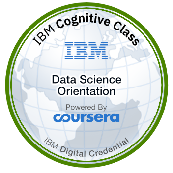

ServiceNow Associate Technical Consultant at Provalus, specializing in platform administration, workflow automation, application development, and IT service management. Experienced in configuring and enhancing ServiceNow solutions to streamline business processes, improve operational efficiency, and meet client requirements. Worked on enterprise client projects involving the development of user stories, service catalog configuration, approval workflows, and automation using ServiceNow Flow Designer.
Experienced IT Technician at Elliott Electric Supply (NacSpace), specializing in the maintenance, repair, and support of PCs, laptops, printers, cameras, NVRs, and access points. Proven ability to diagnose and resolve hardware and software issues efficiently, ensuring optimal system performance and minimal downtime in fast-paced environments. In addition to technical support, developed internal software solutions to streamline company operations and designed custom applications for independent clients. Collaborated with server and networking teams to deploy and host applications using Microsoft IIS, gaining hands-on experience with web hosting and infrastructure. Also implemented webhooks and configured web relay systems to enable real-time automation and hardware-triggered events. Committed to maintaining high system uptime and delivering reliable, customer-focused IT solutions.
Provided front-office support by answering incoming phone calls, assisting customers with questions and service requests, and ensuring a positive customer experience. Maintained a clean, organized office environment while supporting daily administrative tasks and contributing to efficient office operations through strong communication, teamwork, and attention to detail.

Data Science Certification
CSA
CIS